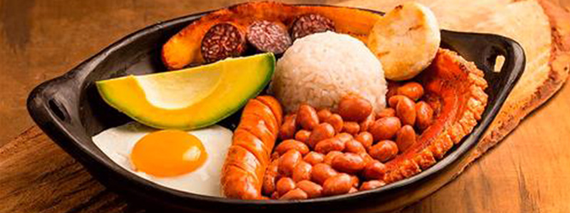
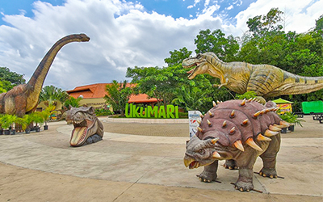
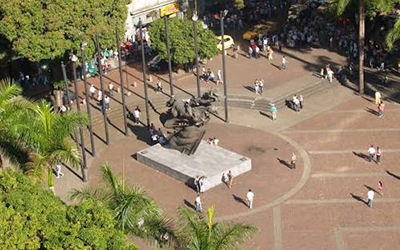

Dónde comer
En este buscador vas a poder filtrar por nombre, tipo de establecimiento y por barrio
Ver más

En este buscador vas a poder filtrar por nombre, tipo de establecimiento y por barrio
Ver más
En Pereira vas a encontrar platos típicos y comida de todo el mundo
Ver más
Conocé los lugares y mercados en donde podés disfrutar de la mejor gastronomía de la Ciudad
Ver más
Explora uno de los parques temáticos y de conservación de fauna silvestre más grandes de Latinoamérica.
Ver Más
Recorre el corazón de la ciudad y admira la emblemática escultura del Bolívar Desnudo de Rodrigo Arenas Betancur.
Ver Más
Disfruta del Paisaje Cultural Cafetero, fincas tradicionales y senderismo en la cuenca del río Otún.
Ver Más